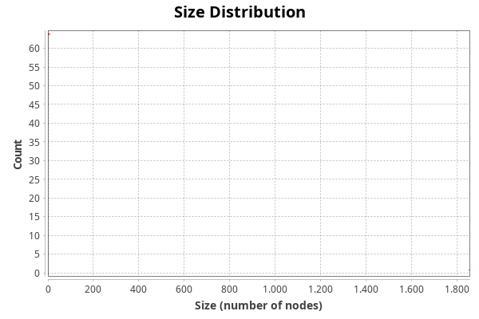

Connected Components Report
Parameters:
Network Interpretation: directed
Results:
Number of Weakly Connected Components: 65
Number of Strongly Connected Components: 342

Algorithm:
Robert Tarjan, Depth-First Search and Linear Graph Algorithms, in SIAM Journal on Computing 1 (2): 146–160 (1972)